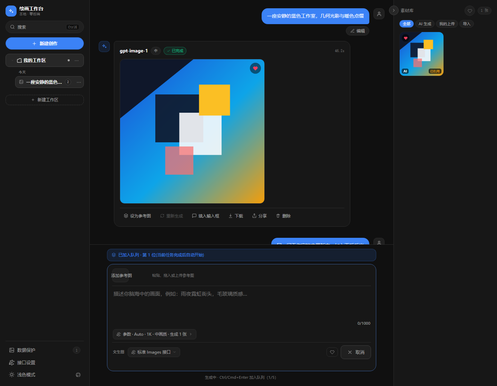

首页 / 使用指南
AI 绘画工作台使用指南
AI 绘画工作台是一个纯前端、零后端的 AI 图片生成工具：填入你自己的 OpenAI / NewAPI 兼容接口，就能在浏览器里文生图、用参考图改图、管理素材与历史。 接口 Key、图片与生成记录全部留在本机浏览器，项目可部署为任意静态站点。
它没有账号，也不需要注册；打开 在线工作台 即可开始。下面说明完整用法与常见问题。

它能做什么
- 文生图：输入描述即可生成，支持宽高比、分辨率、画质与批量张数等参数。
- 参考图改图：把一张或多张素材（包括以往生成结果）设为参考图再生成，单次最多 16 张，全部随请求发送。
- 生成队列：图片接口一次只跑一个请求，生成中再提交会进入队列（最多 5 单），并按顺序自动续跑。
- 删除可撤销：删单条生成、批量删素材、删会话、删工作区都有 5 秒撤销窗口。
- 本地素材库：图片以 Blob 存在 IndexedDB，元数据与图字节分离，一图可多处复用；可按「AI 生成 / 我的上传 / 导入」筛选。
- 大图预览：滚轮缩放、双击缩放还原、拖拽平移，并可复制提示词或图片。
- 工作区与搜索：多工作区、会话历史，以及
Ctrl/⌘ K统一搜索（带缩略图）。 - 备份与分享：整库 zip 导出/导入、接口预设分享、单次生成「配方」分享——导出一律不包含 API Key。
- 中英双语：界面支持简体中文与 English 切换。
如何开始
- 打开 工作台，点击「添加接口」。
- 填写 Base URL、API Key 和模型名，点「测试连接」确认可用后保存。
- 在底部输入框描述你想要的画面，按
Ctrl/⌘ + Enter生成。 - 没有思路时，点击空状态里的灵感标签可一键填入示例提示词。
常用快捷键
Ctrl/⌘ + Enter：生成；生成中则加入队列Ctrl/⌘ + K：打开统一搜索/：聚焦输入框；Alt + N：新建创作←→HomeEnd：聚焦参考图缩略图时调整顺序
支持的接口
任何兼容标准 OpenAI images 协议的接口都可以使用，包括 OpenAI 官方与 NewAPI 等中转服务：
文生图走 images/generations，带参考图时自动走 images/edits。
旧版的 chat / auto 预设会自动迁移为 images。
前提是接口允许浏览器跨域访问（CORS）——这是纯前端架构的固有限制。若接口不允许跨域， 浏览器会直接拦截请求，任何纯前端应用都无法绕过。
数据与隐私
- 没有后端服务器，图片与生成历史存本机 IndexedDB，接口预设与偏好存 localStorage。
- 只有你主动发起的生成请求会发送到你填写的接口，应用本身不收集数据。
- API Key 以明文存于 localStorage，请勿在公共设备保存；界面提供「一键清除凭据」。
- 浏览器在存储紧张时可能清理 IndexedDB，重要素材请导出整库 zip 备份。
常见问题
AI 绘画工作台是免费的吗？
应用本身完全免费且开源（MIT 许可）。它不提供模型，你需要填入自己的 OpenAI / NewAPI 兼容接口，因此实际生图费用取决于你使用的接口服务商。
需要自己的 API Key 吗？
需要。首次使用需在「接口设置」中填写 Base URL、API Key 与模型名，然后点「测试连接」确认可用。Key 只保存在你自己的浏览器里。
我的图片和 API Key 会被上传吗？
不会上传到本应用。这是一个纯前端应用，没有后端服务器。图片与生成历史存在本机浏览器的 IndexedDB，API Key 存在 localStorage。只有你主动发起的生成请求会直接发送到你填写的接口。
支持哪些接口？
任何兼容标准 OpenAI images 协议的接口，包括 OpenAI 官方以及 NewAPI 等中转服务。文生图走 images/generations，带参考图时自动走 images/edits。前提是该接口允许浏览器跨域访问（CORS）。
为什么提示无法连接接口（CORS）？
浏览器出于同源策略，禁止网页直接请求未开放跨域的第三方接口。请确认接口允许跨域，且 Base URL 使用 https（在 https 页面上请求 http 接口会被浏览器拦截）。
生成很慢或超时怎么办？
图片生成通常需要 30–120 秒。每个接口可单独配置 30–1800 秒的请求超时（默认 180 秒），可在接口设置中调大。超时会被标记为失败，你主动取消会被标记为已取消，两者都会记录在结果卡中。
数据会丢失吗？如何备份？
图片与历史存在浏览器 IndexedDB 中，浏览器在存储紧张时可能清理数据。建议在「数据保护」中开启备份提醒，并定期导出整库 zip；导出内容不包含 API Key，可在新设备导入。
可以在手机上使用吗？
可以。界面适配桌面与移动端，移动端提供导航抽屉与素材库入口，参考图为单行横向滚动。不过生图仍受第三方接口是否允许跨域的限制。
About (English)
AI Drawing Workbench is a front-end-only, zero-backend tool for AI image
generation. Plug in your own OpenAI / NewAPI-compatible endpoint and generate images directly
from the browser. Text-to-image uses images/generations; when reference images are
attached it automatically uses images/edits.
There is no account and no server: your API key, images and history stay in your own browser (localStorage and IndexedDB). The app itself is free and MIT-licensed; generation costs depend on the endpoint you provide. The endpoint must allow cross-origin (CORS) requests, which is the inherent limitation of a pure front-end app. The UI is available in Simplified Chinese and English.